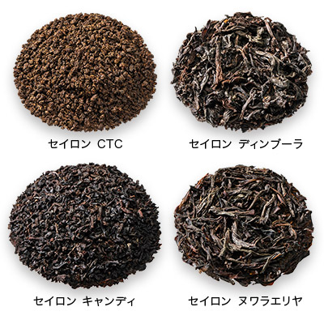
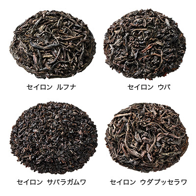
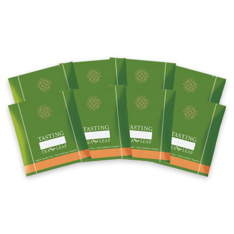
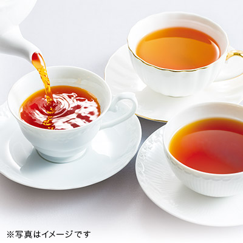
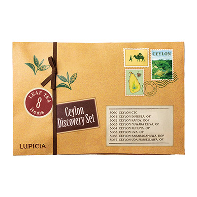

실론 디스커버리 세트
セイロン ディスカバリーセット





7大産地のセイロン紅茶と、スタンダードなブレンドの全8種。
シンハラ語で「光り輝く島」という意味を持つスリランカ。
中央の山岳地帯から南部にかけて、庭園のように美しく整備された茶園が多数点在し、19世紀から続く英国式紅茶の伝統を引き継ぎながら進化を続けています。
そんなインド洋に浮かぶ紅茶の聖地から届いた、セイロン紅茶8種の飲みくらべをお楽しみいただけるセットです。
スリランカから届いた小包をイメージした、わくわくするようなパッケージは、開くとセイロン紅茶を楽しむためのコツやヒントが。
個性豊かな一杯を旅するように味わいながら、セイロン紅茶の新しい魅力を発見してみませんか。
【お茶ラインアップ】※個包装8種 各リーフ5g入
5060 CEYLON CTC
5061 CEYLON DIMBULA, OP
5062 CEYLON KANDY, BOP
5063 CEYLON NUWARA ELIYA, OP
5064 CEYLON RUHUNA, OP
5065 CEYLON UVA, OP
5066 CEYLON SABARAGAMUWA, BOP
5067 CEYLON UDA PUSSELLAWA, OP
【ラインアップについて】
セイロンの紅茶は産地の標高によってローグロウン（610m未満）、ミディアムグロウン（610〜1,220m未満）、ハイグロウン（1,220m以上）の三つに分類され、それぞれ製法や品種など個性の異なる上質な紅茶を製造しています。
セイロン ディスカバリーセットでは、スリランカの七つの主要な産地の紅茶と、スタンダードなブレンド紅茶1種をお届けします。
ここでは、セットで出会うことができる七つのお茶の産地についてご紹介します。
・ディンブーラ(Dimbula, CEYLON)
島の西斜面に広がる、セイロン最古のお茶産地の一つ。美しい山岳風景や水に恵まれた、ミディアムグロウンからハイグロウンに位置する主要産地です。
バラ色やオレンジ色に輝く水色、甘い香りと清涼感ある後味が魅力的。
・キャンディ（Kandy, CEYLON）
古い寺院が湖畔に建ち並ぶ世界遺産の古都・キャンディは、標高650〜1,300mに広がるミディアムグロウンを代表する名産地。島で初めて茶樹が植えられた土地としても有名です。
クラシックなオーソドックス製法から現代的なCTCまで製造される紅茶は、安定した品質とリーズナブルな価格を兼ね備えたセイロン紅茶の優等生です。
・ヌワラエリヤ（Nuwara Eliya, CEYLON）
英国統治時代の別荘や競馬場などが立ち並ぶ標高2,000m前後の高原リゾート地。
野生のミントやイトスギのような、青みがかった爽やかな余韻と明るいオレンジ色に輝く水色が特徴のハイグロウン産地です。
・ルフナ(Ruhuna, CEYLON)
ルフナは現地語で「南」を意味する、島の南部エリアの総称。
ハンドメイドによる伝統的製法の高級品からミルクティー向けのCTCまで製造される、世界的に需要の高い紅茶産地。ミルクティー向けの紅茶産地としても人気です。
・ウバ（Uva, CEYLON）
標高900?1,500mの丘陵地帯に広がるハイグロウン産地。力強い味わいと爽やかな香気が特徴。日本ではインド・ダージリン、中国・祁門と並ぶ、世界三大銘茶の一つとして知られています。
特に冷たく乾燥した季節風が茶園に吹く7?8月頃に風味が凝縮するクオリティーシーズンの紅茶は、清涼感あるキレ味、ガツンと力強い渋み、南国の果実を連想させる豊かな余韻が調和する個性派で、世界中の愛好家に支持されています。
・サバラガムワ(Sabaragamuwa, CEYLON)
セイロン最大の紅茶生産地区サバラガムワは、スリランカ中央山脈南西側、ルフナの北東に隣接するローグロウンを中心とした産地。
特に標高610m未満の丘陵地帯で育まれる紅茶は、赤みがかった濃い黄褐色の色合い、キャラメルのような香りの余韻と優美な気品があります。
・ウダプッセラワ(Uda Pussellawa, CEYLON)
スリランカ中央山脈東側に位置するウダプッセラワは、キャンディ地区とウバ地区に挟まれ、ヌワラエリヤ茶園エリアに隣接する標高950〜1,600mのハイグロウン産地。
ブーケを思わせる花香や、深みと落ち着きのあるミディアムボディの紅茶を生産します。
- 상품번호
- K625
- 가격
- 900円
- 판매 안내
- ※수량・기간한정
※상미기한：제조일로부터2년
※차의 풍미를 해치지 않게, 서둘러 드세요. - 원재료
- 紅茶※商品の改定などにより、商品パッケージの記載内容が上記内容と一部異なる場合がございます。